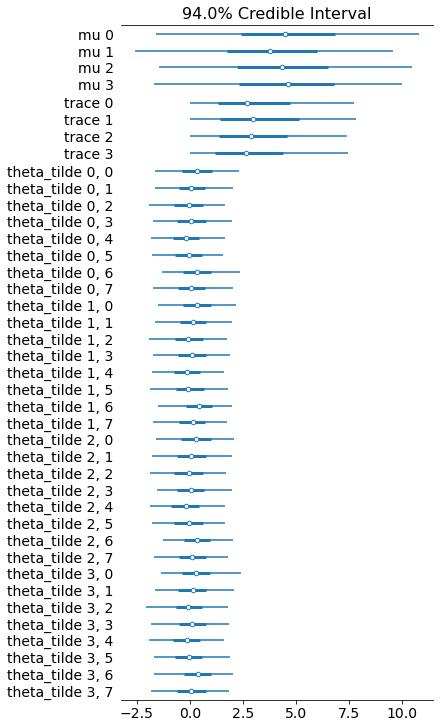

Introducing Stan2tfp - a lightweight interface for the Stan-to-TensorFlow Probability compiler
TL;DR
The new Stan compiler has an alternative backend that allows you to do this:
stan2tfp is a lightwight interface for this compiler, that allows you to do this with one line of code, and fit the model to data with another.
Why Stan2tfp
In short - to get the convenience of Stan programs and the scalability of TensorFlow. The model is written in Stan, which means you get a lot of the benefits of having the Stan compiler behind your shoulder (types, bounds, etc). This comes practically for free, since there’s no C++ compilation. After the model is converted to TensorFlow Probability code, you sit on top of the entire TF infrastructure, which has many advantages. For example, moving from 4 chains to more than a thousand is practically free.
Note that the TFP backend of the Stan compiler is still in its infancy. It only supports a subset of the distributions covered by Stan, and only minimal parts of the language. Expect bugs and sharp edges. Please help by trying it out, reporting bugs, and letting me know what you think!
How stan2tfp works
stan2tfp is just a wrapper, it doesn’t do anything smart by itself; all the actual work is done by the compiler, which was written the Stan Development Team. The core functionality can be summarized as follows:
Code generation
We first create a Stan2tfp Python object. It “eats” a Stan program (string/file), calls the compiler, “catches” the emitted TFP code (from stdout) and saves it as a Python string. In the process, it checks for the compiler - if it’s not found, stan2tfp will download it for you. This only needs to happen once.
Evaluation by the interpreter
The string that represents the model is then evaled by the Python interpreter. This creates a
Python object in the current namespace. Not that the model is still not instantiated - we haven’t passed
any data, so we can’t sample from the model. The eval is packed within the constructor, and
the compiler doesn’t emit any “hazardous code”, so using it is safe.
Instantiating and fitting the model
To fit the model, we need to pass a data dictionary either to the Stan2tfp constructor, or to
the init_model function. After the data is passed, we can call sample, which wraps
TFP’s MCMC machinery, aiming for sensible defaults and ease-of-use. At this point, we left Stan-world
completely, and everything is TFP-ed - the model, the inference algorithm, etc.
Basic example
To illustrate the basic functionallity, we’ll fit the eight schools model (the “hello world” of bayesian models) using stan2tfp.
We begin by importing the Stan2tfp object, and some plotting functionality:
from stan2tfp import Stan2tfp
import seaborn as sns
import matplotlib.pyplot as plt
import arviz as az
Here’s the original Stan model:
!cat eight_schools.stan
data {
int<lower=0> J;
real y[J];
real<lower=0> sigma[J];
}
parameters {
real mu;
real<lower=0> tau;
vector[J] theta_tilde;
}
transformed parameters {
vector[J] theta = mu + tau * theta_tilde;
}
model {
mu ~ normal(0, 5);
tau ~ normal(0, 5);
theta_tilde ~ normal(0, 1);
y ~ normal(theta, sigma);
}
The data is specified using a Python dictionary:
eight_schools_data_dict = dict(
J=8,
y=[28, 8, -3, 7, -1, 1, 18, 12],
sigma=[15, 10, 16, 11, 9, 11, 10, 18]
)
Finally, the model object itself is created:
model = Stan2tfp(stan_file_path="eight_schools.stan", data_dict=eight_schools_data_dict)
Downloading the latest stan2tfp compiler...
Download complete, saved to: /Users/adamhaber/projects/stan2tfp/stan2tfp/stan2tfp_compiler.exe
Compiling stan file to tfp file...
The emitted TFP code is accessible via get_tfp_code() (see the picture at the top of the post).
This code is then evaled by the interpreter and creates the necessary Python objects in
the current namespace. We can now call sample to fit the model:
mcmc_trace, kernel_results = model.sample()
model.sample returns the actual samples (mcmc_trace) and TFP’s
kernel_results (holding important sampler diagnostics). Since we’re in TFP-world now, we
can use any tool from the TFP ecosystem we like; specifically, we can use the excellent Arviz library for plotting the results:
data_for_az = az.from_tfp(posterior=mcmc_trace, var_names=['mu','trace','theta_tilde'])
az.plot_forest(data_for_az)

That’s it. I’ll probably post some benchmarks and comparisons in the near future.
Adam Haber
Computational Neuroscience PhD Student
Interested in probabilistic programming, computational statistics, statistical physics and programming languages.